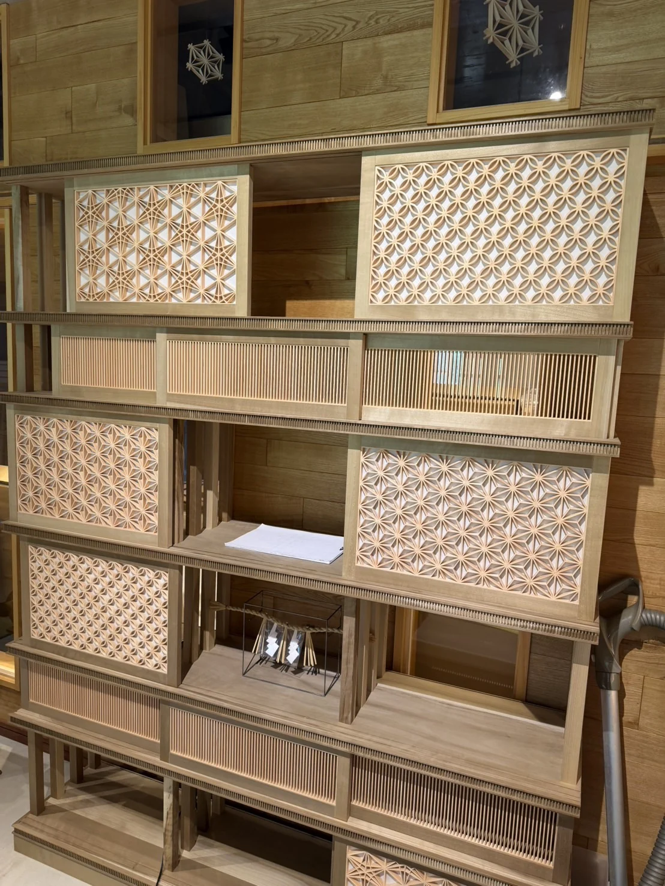
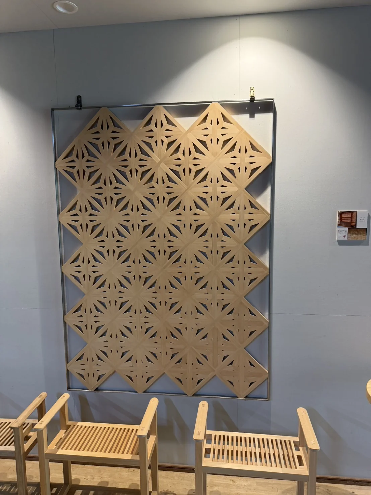

レストランチェーン様との取組みA restaurant chain
全米最大級のレストランチェーン様より、店舗内装のミルワークについてご発注をいただいています。 One of the largest restaurant chains in the United States has commissioned us for the millwork in their store interiors.
課題The problem
米国現地のレストラン工事関連は異常な程に価格が高騰しており、また日本と大きく違うのは納期が約3倍〜6倍もかかってしまうことです。問題点の全てがコストとして跳ね返っていました。 Restaurant construction in the US has become extraordinarily expensive, and lead times run roughly three to six times longer than in Japan. Every one of those problems was ending up on the cost sheet.
私たちの解決What we did
ミルワーク（家具・材料など）部分を日本の木工所で製造し、コンテナで輸出。物件現地に到着したら、施工図・単品図をもとにプラモデルの様に簡易に組み立てる方式に切り替えました。輸送費を含めても現地で製造するよりコストを抑えられ、納期は約4分の1に短縮できています。 We moved the millwork — furniture, materials and fittings — into Japanese workshops and shipped it by container. Once it lands, it goes together on site from the shop and component drawings, closer to assembly than to construction. Even with freight included it comes in below local manufacture, in roughly a quarter of the lead time.
- 家具・材料の製造コストを削減Lower cost to manufacture furniture and materials
- 納期短縮による人件費の削減Shorter programme, lower on-site labour
- 早くオープンできることで空家賃の発生を削減Opening sooner means less rent paid before trading
- 売上収入を早期に実現Revenue starts earlier


